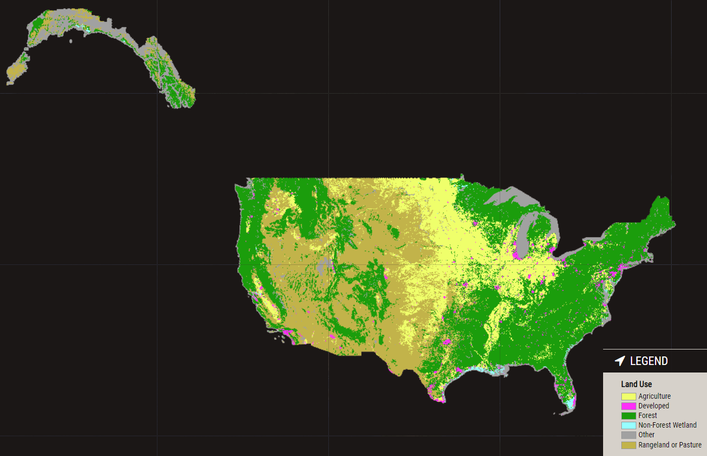
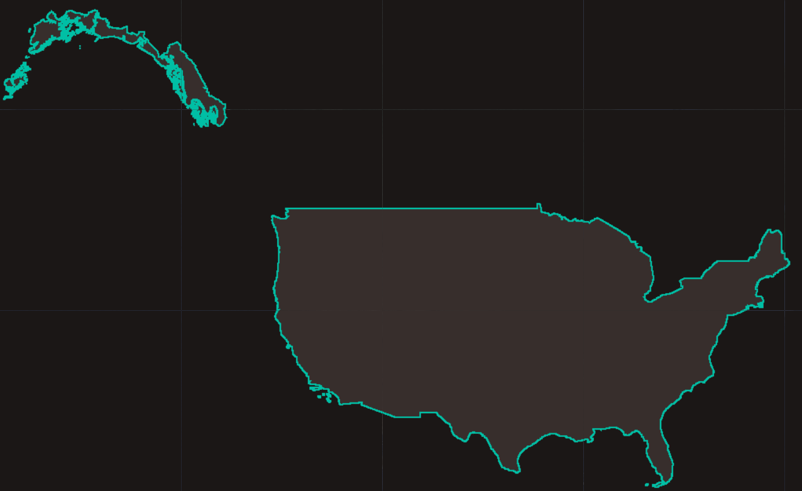

The Landscape Change Monitoring System (LCMS)
LCMS is the USDA Forest Service landscape change monitoring system for US lands
What does it monitor?
Vegetation cover disturbance and regrowth from 1985-present

What does it monitor?
Land cover transitions from 1985-present

What does it monitor?
Land use transitions for each year from 1985-present
Where does LCMS monitor?
LCMS monitors all lands across the conterminous United States and southeastern Alaska
How is it useful?
Monitor tree mortality from insects and disease, fire, and harvest.
San Juans, CO
How is it useful?
Quantify tree mortality from insects and disease, fire, and harvest.

San Juans, CO
How is it useful?
Monitor trends of urban expansion.

Denver, CO
How is it useful?
Quantify trends of urban expansion.

Denver, CO
How is it useful?
Monitor tree mortality from insects and disease.

Sangre De Cristo Mts, CO
How is it useful?
Monitor trends of urban expansion.

Las Vegas, NV
How is it useful?
Quantify trends of urban expansion.

Las Vegas, NV
How is it useful?
Monitor fluctuations in water cover.

Lake Powell, UT
How is it useful?
Monitor cumulative tree harvest and regrowth.

Southeastern US harvest cycles, SC
How is it useful?
Monitor glacial recession.

AK
Background
Knowing where, when, and what factors create change across landscapes is critical to making sound land management decisions. To support land managers and scientists with this need, an interagency effort between leading remote sensing scientists and application specialists in the US Forest Service, US Geological Survey, NASA, and numerous universities have collaborated to develop and produce a Landscape Change Monitoring System (LCMS). LCMS is a remote sensing-based system for mapping and monitoring landscape change across the United States. LCMS provides a “best available” map of landscape change that leverages advances in time series-based change detection techniques, Landsat data availability, cloud-based computing power, and big data analysis methods.
Literature


CONTACT
Geospatial Technology and Applications Center (GTAC)
125 S State St, Suite 7105
Salt Lake City, UT 84138
Contact Us